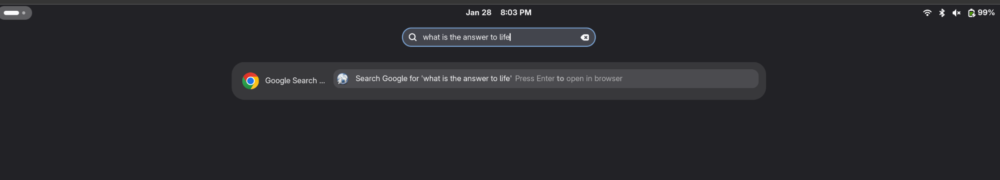

Many engines at once
Enable up to five search engines and get a dedicated result row for each one.
Pick one or many search engines and search straight from the Activities Overview. Press Enter and the result opens in your browser.
curl -fsSL https://raw.githubusercontent.com/zonaro/gnome-web-search-provider/master/install.sh | sh
Works on GNOME Shell 40+. The installer asks for sudo only to register the provider system-wide.

One tiny provider, dozens of engines, no background bloat.
Enable up to five search engines and get a dedicated result row for each one.
Web, images, maps, news, communities, media and reference — all ready to go.
Turn any website with a search box into a provider with its own URL template.
Open results in Firefox, a Flatpak browser, or anything you can run from a command.
A GTK4 preferences app with a searchable icon grid and instant switches.
Pure Python standard library — the D-Bus service is implemented from scratch.
Script it with gsettings, with a transparent JSON fallback when the schema is absent.
English, Brazilian Portuguese and Spanish, auto-detected.
No cloning, no pip, no build tools. One command.
Paste the command above into a terminal. It downloads the latest version and installs it for your user.
Log out and back in (or restart the Shell) so it discovers the provider.
Open Settings → Search, or launch the providers app from the app grid.
Not showing up? Run
gsettings get org.gnome.desktop.search-providers disabled
Changed your mind? Take everything back out — package, schema, launchers and provider manifest.
curl -fsSL https://raw.githubusercontent.com/zonaro/gnome-web-search-provider/master/uninstall.sh | sh
Enable any combination — up to five at a time.
Kagi may show a sign-in wall; You.com works anonymously.
GNOME Shell renders at most five results per search provider — a hard limit in the Shell itself, not in this extension. Because each engine adds its own result row, the app caps enabling at five and explains when you try a sixth. Nothing is broken; it's the platform.